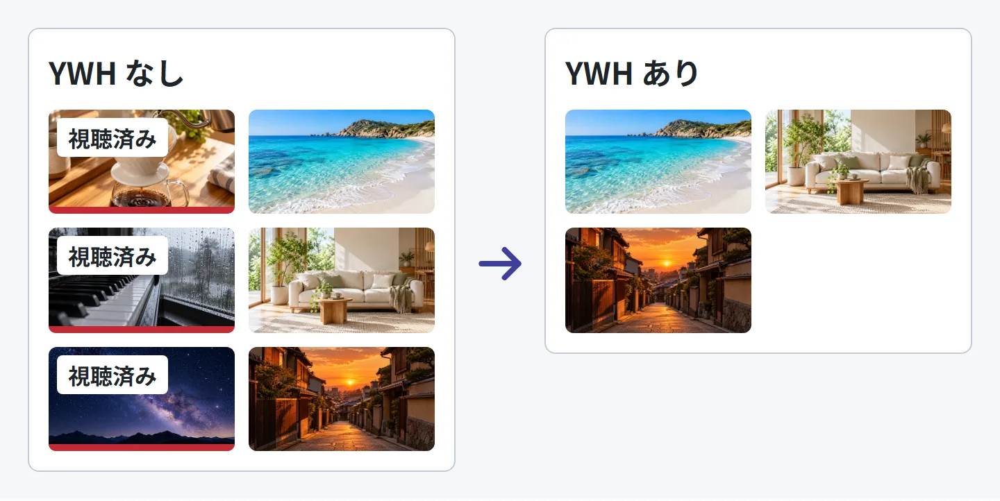
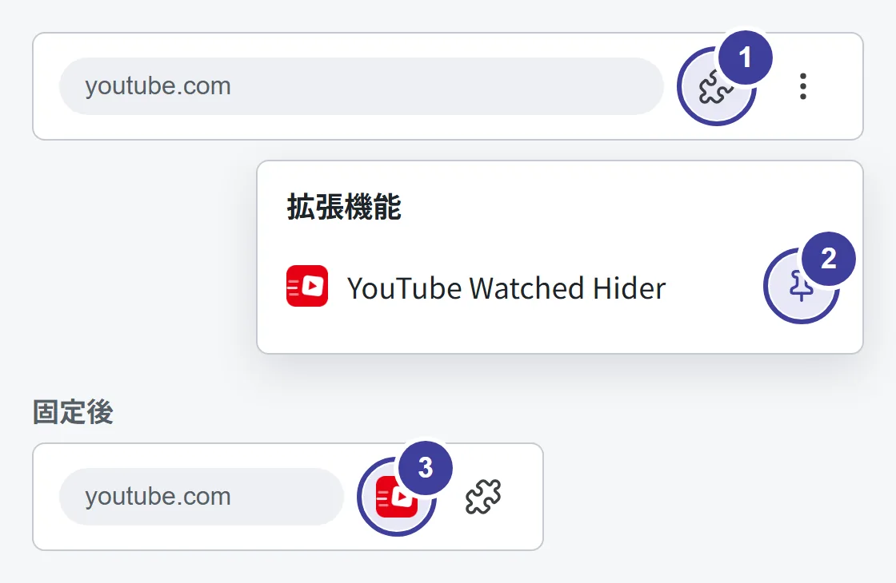
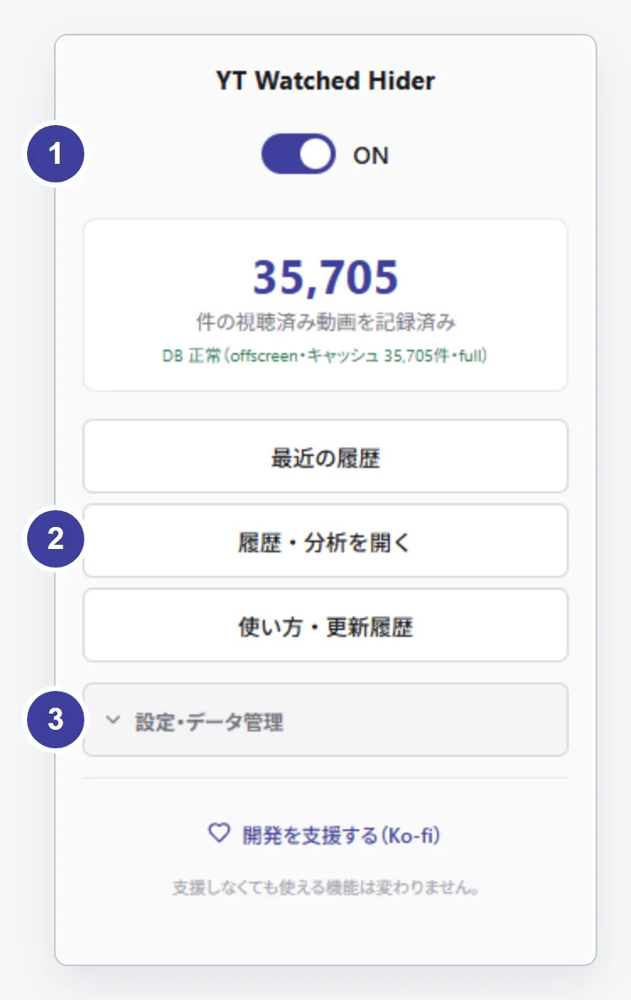

YouTube Watched Hider
基本の使い方
拡張内の「使い方・更新履歴」をもとに、
はじめて使うときの操作をまとめました。
1. 導入して、YouTube を開く
- パソコンの Chrome で、下のリンクから Chrome ウェブストアを開きます。
- 拡張名が YouTube Watched Hider、提供元が sasaki.s.role であることと、表示される権限を確認して追加します。
- YouTube を開きます。すでに開いていたページは再読み込みしてください。
- 通常どおり動画を見ます。拡張が視聴済みと判定・記録した動画が、次の一覧から隠れます。

過去の全視聴履歴を自動で揃えるものではありません。まずは導入後の視聴で、表示の変化を確認してください。
2. 隠し方を、自分に合わせる
Chrome の拡張機能メニュー（パズルのアイコン）から YWH のアイコンを押すと、操作画面が開きます。よく使うので、ツールバーに固定しておくと便利です。

- パズルのアイコンを押す
- YouTube Watched Hider の横のピンを押す
- ツールバーに YWH のアイコンが常に表示される

- 上部のスイッチ：非表示の ON / OFF
- 「履歴・分析を開く」：履歴の検索と音楽の分析
- 「設定・データ管理」：ページ別の非表示、半透明表示、バックアップ
隠した動画も表示したい
上部の ON / OFF で非表示を切り替えます。隠れた動画そのものを YouTube から削除する操作ではありません。
検索結果だけは隠したくない
設定・データ管理 → ページ別の非表示 → 検索結果で隠す を OFF にします。ホーム、登録チャンネルの新着一覧、各チャンネルページ、プレイリストのページ、検索結果、関連動画の6か所を個別に設定できます。
消す代わりに、薄く表示したい
設定・データ管理 → 視聴済みを半透明で表示する を ON にします。
視聴済みは、どう判定する？
再生が終わった動画や、YouTube の一覧で視聴済みと検出した動画を記録します。一覧の進捗バーを判定する割合は、設定・データ管理 → 視聴済みとみなす％ で1〜100％から選べます。既定は95％です。
これは実視聴時間の計測ではありません。値を変えても、すでに登録された視聴記録は変わりません。
3. 履歴や音楽の傾向を振り返る
拡張アイコンから 履歴・分析を開く を押します。記録した動画の一覧・検索や、音楽の傾向分析を利用できます。
Topic チャンネルの履歴からアーティスト別のランキングを表示するほか、チャンネルやキーワードを手がかりに振り返れます。
分析の「合計時間」は動画の長さの合計です。途中で視聴をやめた時間、倍速、リピートを反映した実視聴時間ではありません。
4. 必要な履歴を、手元に残す
拡張アイコンの 設定・データ管理 → 今すぐバックアップ から、データを JSON ファイルに書き出せます。復元するときは バックアップを復元 からファイルを選びます。
復元方法には置換と統合があります。置換では、バックアップ時点にない記録が失われるため、画面に出る件数と復元方法を確認してください。
拡張を削除すると、ブラウザ内の履歴も削除されます。残したい場合は先にバックアップしてください。ダウンロード済みの JSON バックアップは削除されないため、別途管理してください。
続きは、拡張内のガイドへ
YWH の拡張アイコン → 使い方・更新履歴 を開くと、導入した版の操作案内と更新情報を読めます。
このページは公開版 v1.60.79 の基本操作に絞った案内です。表示言語や導入した版によって、文言や配置が異なる場合があります。
困ったときは不具合を報告する確認日：2026年10月11日。紹介文と基本操作は公開タグ v1.60.79、ストア掲載情報、拡張内ガイドを参照しています。